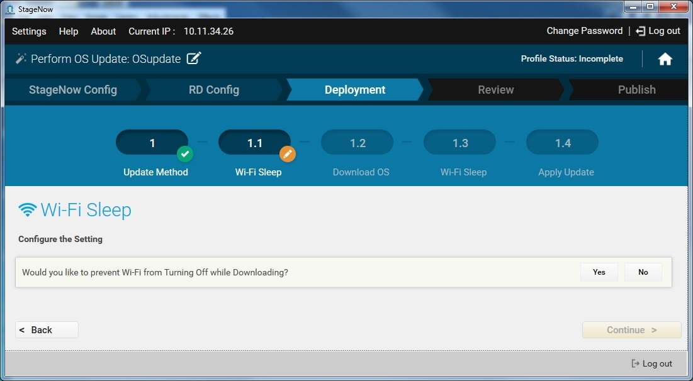
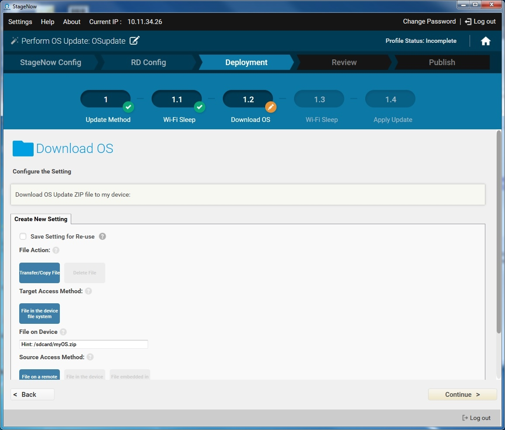
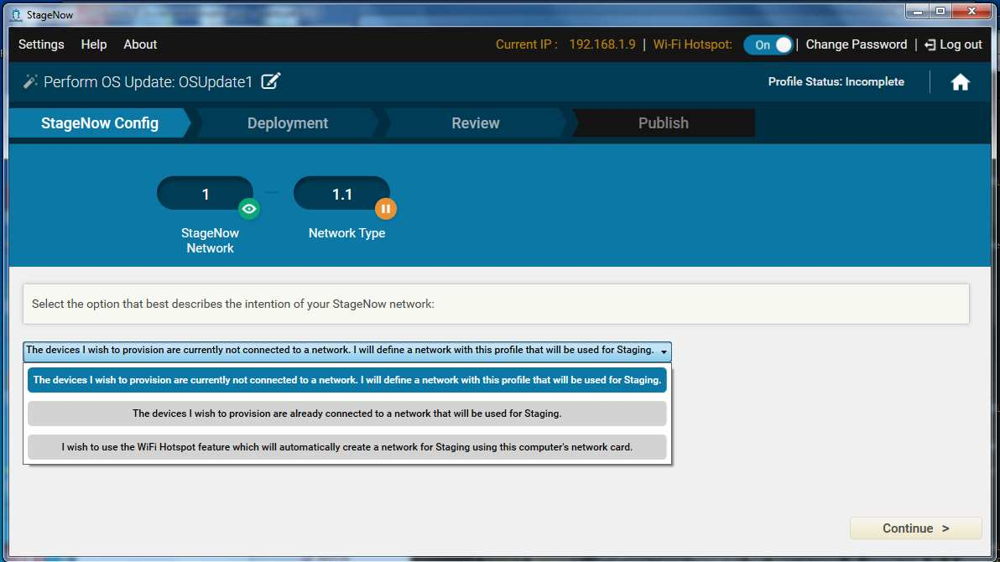
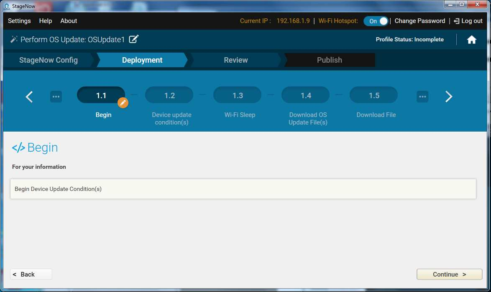
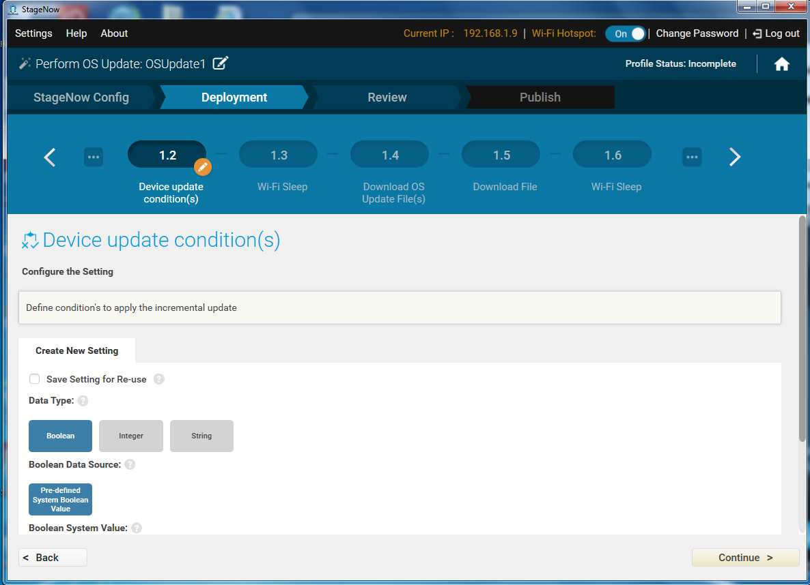
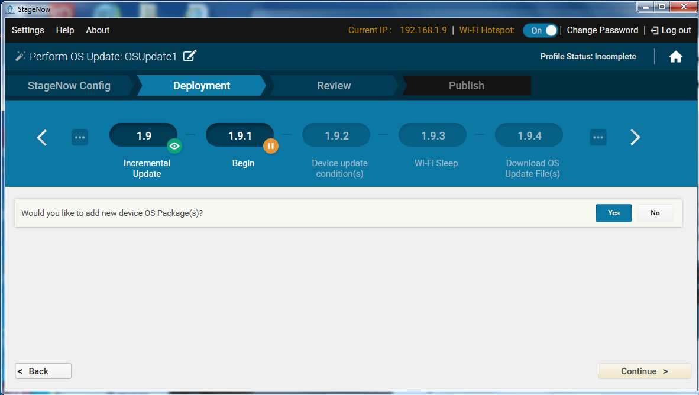
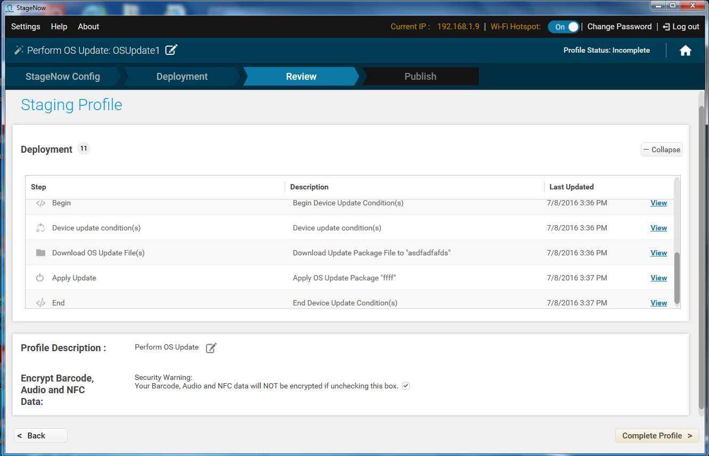

使用此向导在设备上执行操作系统更新。通过将 zip 文件下载到设备或在设备上使用现有 zip 文件，此向导将更新或修补程序应用到操作系统。此向导还允许您连接至网络。
执行操作系统更新
要创建执行操作系统更新配置文件：
选择“新建配置文件”。
从下拉菜单中选择 MX 版本。
选择“执行操作系统更新”向导，然后选择“创建”。

输入配置文件名称，然后选择“开始”。
要选择使用 StageNow 条码连接到此网络，请选择“是”，然后选择“继续”。有关连接到网络和填充设置窗口的说明，请参阅配置文件/连接网络。完成后，请选择“继续”。
注意：此向导包括“部署”部分。部署需要主机和设备在同一个网络上。
如有提供，选择是否使用“快速部署”(RD) 客户端连接到此网络。请注意，只有您在设置屏幕打开“传统模式”时才会出现 RD 配置部分。对于不包括 StageNow 客户端的设备，请选择“是”。有关更多信息，请参阅快速部署 (RD) 客户端。
如果您选择了“是”，则选择是否要设置 Wi-Fi 选项和/或 Wi-Fi 配置文件。请参阅设置类型/WiFi mgr。

选择执行操作系统更新的方法，然后选择“继续”。
- 选择“否，我要下载文件”，将操作系统更新 zip 文件推送至设备。
- 选择“是，我要应用文件”，使用已驻留在设备上的操作系统更新 zip 文件。
如果您选择了“否，我要下载文件”：
a. 选择是否在下载时防止 Wi-Fi 关闭。有关信息，请参阅设置类型/Wi-Fi。

b. 输入 ZIP 文件的信息。有关 File Manager 的更多信息，请参阅设置类型/文件。

c. 选择是否允许 Wi-Fi 在下载后关闭。有关信息，请参阅设置类型/Wi-Fi。

输入 ZIP 文件的信息。有关 Power Manager 的更多信息，请参阅设置类型/电源。

选择“继续”以应用该更新，然后转至审核窗口。
执行增量操作系统更新
增量更新使您可以在多个设备上执行操作系统更新，并定义更新条件。仅 MX 6.0 支持此功能。
选择“新建配置文件”。
从下拉菜单中选择 MX 6.0。
选择“执行操作系统更新”向导，然后选择“创建”。
输入配置文件名称，然后选择“开始”。
从下拉菜单中选择您的 StageNow 网络选项：
我希望提供的设备当前未连接到网络。我将定义将用于部署带此配置文件的网络。
我希望提供的设备已连接至将用于部署的网络。
我希望使用 WiFi 热点功能，该程序将自动创建使用此计算机网卡部署的网络。

如果您选择第二个或第三个选项，请跳到步骤 7。
要选择使用 StageNow 条码连接到此网络，请选择“是”，然后选择“继续”。有关连接到网络和填充设置窗口的说明，请参阅配置文件/连接网络。完成后，请选择“继续”。
注意：此向导包括“部署”部分。部署需要主机和设备在同一个网络上。
在“部署”部分中，从更新类型下拉菜单选择“增量更新”。
注意：
如果您选择“全部操作系统更新”，请转至之前过程的步骤 8。

在“开始”窗口选择“继续”以定义第一个设备的更新条件。

定义更新条件，然后选择“继续”。

选择是否在下载时防止 Wi-Fi 关闭。有关信息，请参阅设置类型/Wi-Fi。
输入第一个操作系统更新文件的信息，然后选择“是”以添加附加文件的信息。

在结束输入文件信息时，请选择“否”，然后选择“继续”。
选择是否要下载 UPL 文件，每次都需要应用多个操作系统更新包。如果您选择“是”，请参阅设置类型/文件了解 File Manager 的更多信息，。
选择是否在下载后更改 Wi-Fi 睡眠策略，然后选择“继续”。
在“应用更新”屏幕上输入 UPL/ZIP 文件的信息，然后选择“继续”。有关 File Manager 的更多信息，请参阅设置类型/文件。
在“终端设备更新条件”屏幕上选择“继续”。

选择“是”以添加另一设备更新软件包，并重复步骤 11 - 19。

选择是否在条件更新失败时提供错误消息。
选择“继续”以应用该更新，然后转至审核窗口。
